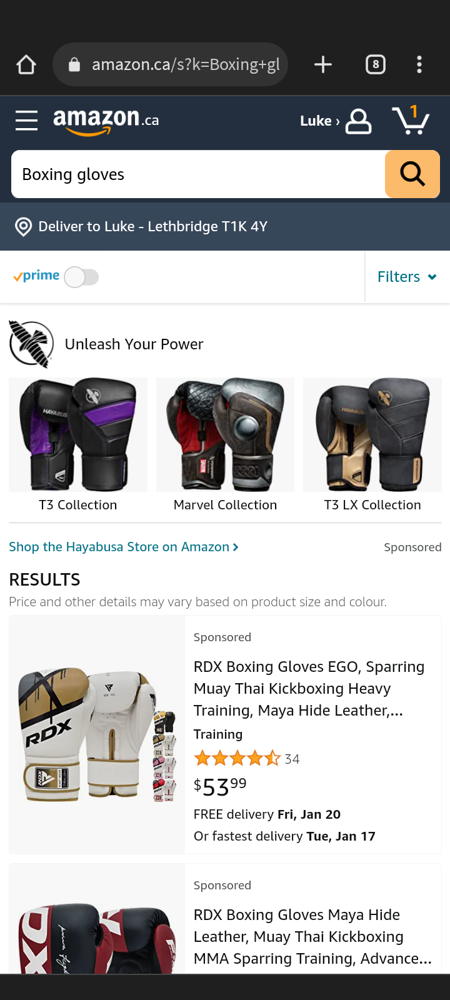
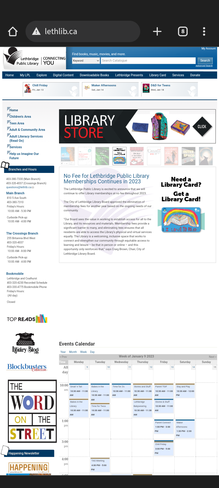

Fitt's Law
Amazon
Amazon.com This websight exemplifies Fitt's law by having several different sizes of buttons. All meant to be easier or harder To click. To filter your results differently (Which you do not want to do by mistake) You have to click on a very small button. Likewise the buttons for the navigation bar, profile page, and kart are quite small. With the largest buttons being the individual products. This is where all the money is made.
PARC: Proximity
The Lethbridge Public Library
Lethlib.ca Allthough this webpage is a very good example of proximity. It doenst work as well on mobile. There are so many secions of buttons, including the naviagtion bar at the top, a search bar for books, a line of images that link to different upcoming activities, positioned right above infromation on the currently selected activity. And then below that is a calendar.
PARC: Contrast
RPG Bot
Rpgbot.net
I really like how this websight uses contrast. (The mobile version, not the web version.) First of all, its white text on a black background. Secondly it uses bold versions of Red, Yellow, Green, and Blue. These colors are used to emphasize and differenciate different parts of the text.